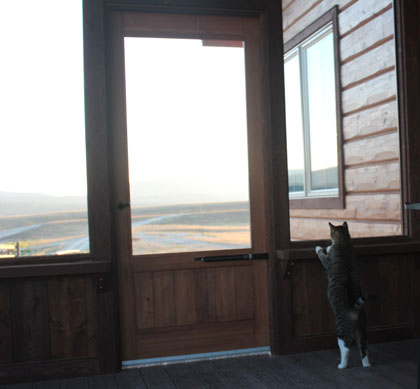
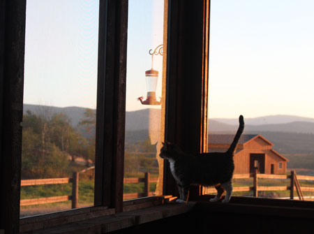
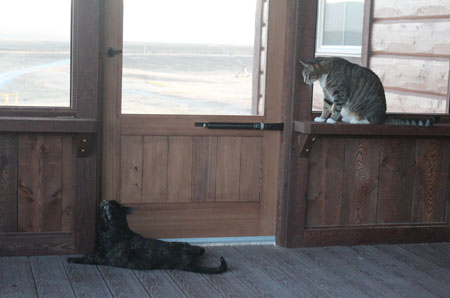
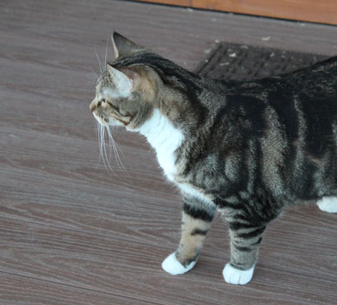
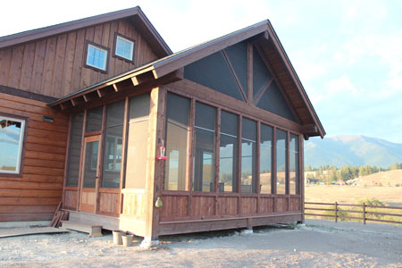

August 2015
| This summer we hoped to complete several
projects on the house, one of which was to screen in two porches on our
house. It was a long project, but we are so thrilled with the
results. Here are scenes from the cats' first experience with the
porch, which has become a favorite hangout for the whole
family. |
|
 |
 |
| Rocket, the male, was the bravest explorer | Admiring the view |
 |
 |
| Feisty was much more interested in the dust on the floor than the windows | Lily (our little chicken) had to be brought out by force. Now she
likes it. Unless someone makes a loud noise. Or a soft noise that she didn't expect... |
 |
|
| A view of the eating porch from the outside - very pretty! | |